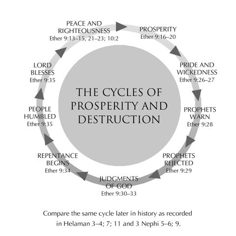

Ether 9-11
These chapters record further accounts of corrupt societies, conspiracies, assassinations, lands full of prisons, and appearance and rejection of more prophets. Now and then we read about a ray of hope and light; for example, Emer “saw the Son of Righteousness, and did rejoice and glory in his day” (9:22). He stands in bold contrast to individuals like Akish, who sought the life of his father-in-law, Jared, his partner in crime (9:4–5). The pattern was perpetuated.
Ether 11 describes the final stages of the Jaredite cycle of apostasy. The people had earlier rejected, mocked, and reviled the prophets. Though King Shule had passed a law protecting prophets and punishing persecutors (Ether 7:23–26), we see how a later king, Shiblom’s brother, made it state policy to execute prophets (11:5). So the prophets withdrew from among the people but returned in the days of Coriantor to warn them that they would be destroyed if they did not repent and that others would be brought by the Lord to this chosen land. Yet, they rejected all the words of the prophets. Their fate was sealed! Thus, in Ether 11 we see what we have seen before: wars and contentions in the land, rejection of the prophets, “and also many famines and pestilences, insomuch that there was a great destruction, such an one as never had been known upon the face of the earth.” And still, there was no repentance, no spiritual soundness among the people.
